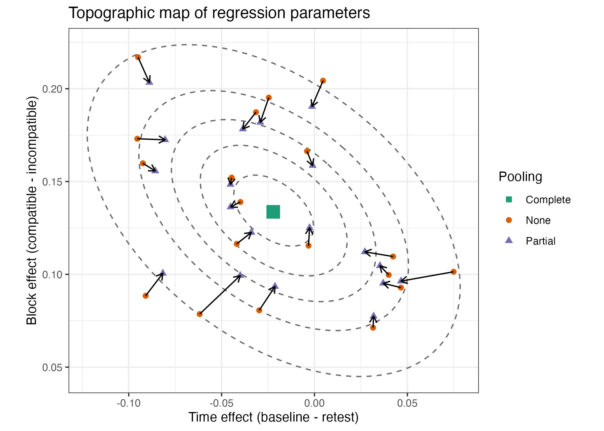

library(arrow)
library(tidyverse)
library(easystats)
library(summarytools)
library(lme4)
library(car)
library(GGally)
library(ellipse)
# respecting color vision deficiency
cbPalette <- c( "#0072B2", "#D55E00", "#009E73", "#CC79A7",
"#F0E442", "#56B4E9", "#999999", "#E69F00")Borrowing Strength in IAT: No-Faking Subject
1 Background
This is a follow-up analysis.
2 Readme
2.1 Design
- Design: 2 (B-Subj/W-Item) x 2 (W) x 2 (W) x 2 (W) factorial mixed design
- N trials: 38 Subj x 20 Item x 8 W-Item x 2 repetition of items = 12160
- N errors: 391 (3.2%)
- N observations: 12160-391=11769
2.2 Variables
Subj: Participant ID (renamed fromID; random factor)Item: Word ID (random factor)Group(between-Subj/within-Item):- No_Faking: control group, where people took the same normative IAT twice
- Faking: experimental group, where people were instructed to fake the retest IAT by slowing down response times in the compatible block
Time(within-Subj/within-Item):- Baseline: first IAT (normative IAT)
- Retest: second IAT (normative or faked, depending on Group)
Block(within-Subj/within-Item):- Compatible: IAT combined block with shorter response times
- Incompatible: IAT combined block with longer response times
Switch(renamed fromTaskSwitch; within-Subj/within-Item):- Yes: Switch from target concept to attribute dimension (or the other way around) from one trial to the next
- No: No switch from target concept to attribute dimension (or the other way around) from one trial to the next
rt: trial response time (DV, renamed fromRT)
3 Load packages
4 Shrinkage (borrowing-strength) plots for non-faking subject
4.1 Fitting a reduced LMM
dat <- read_feather("./data/Cajar_IAT.arrow")
dat$speed <- 1000/dat$rt4.2 Faking Group
iat_fake <- dat |> filter(Group == "Faking")
contrasts(iat_fake$Time) <- contr.sum(2)
contrasts(iat_fake$Block) <- contr.sum(2)
contrasts(iat_fake$Switch) <- contr.sum(2)
mm2 <- model.matrix(~ 1 + Switch*Time*Block, data=iat_fake)
sw <- mm2[,2]
tm <- mm2[,3]
bl <- mm2[,4]
m2_cpx1 <- lmer(speed ~ 1 + sw*tm*bl + (1 + sw*tm*bl | Subj) ,
data=iat_fake, REML=FALSE, control=lmerControl(calc.derivs=FALSE))boundary (singular) fit: see help('isSingular')summary(rePCA(m2_cpx1))$Subj
Importance of components:
[,1] [,2] [,3] [,4] [,5] [,6] [,7]
Standard deviation 0.4167 0.3278 0.09653 0.08054 0.04951 0.04336 6.571e-05
Proportion of Variance 0.5764 0.3568 0.03093 0.02153 0.00814 0.00624 0.000e+00
Cumulative Proportion 0.5764 0.9332 0.96409 0.98562 0.99376 1.00000 1.000e+00
[,8]
Standard deviation 0
Proportion of Variance 0
Cumulative Proportion 1VarCorr(m2_cpx1) Groups Name Std.Dev. Corr
Subj (Intercept) 0.140465
sw 0.034098 -0.394
tm 0.084607 -0.336 0.029
bl 0.078284 0.318 0.053 -0.858
sw:tm 0.012160 0.264 0.150 0.609 -0.490
sw:bl 0.025942 0.022 0.214 -0.721 0.575 -0.589
tm:bl 0.089115 -0.081 -0.272 0.887 -0.908 0.484 -0.687
sw:tm:bl 0.027732 -0.649 0.473 0.590 -0.543 0.383 -0.029 0.295
Residual 0.380932 m2_cpx2 <- lmer(speed ~ 1 + sw*tm*bl + (1 + sw + tm + bl + sw:bl + tm:bl | Subj) ,
data=iat_fake, REML=FALSE, control=lmerControl(calc.derivs=FALSE))
summary(rePCA(m2_cpx2))$Subj
Importance of components:
[,1] [,2] [,3] [,4] [,5] [,6]
Standard deviation 0.4104 0.3259 0.08978 0.07749 0.04131 0.01809
Proportion of Variance 0.5793 0.3653 0.02772 0.02065 0.00587 0.00113
Cumulative Proportion 0.5793 0.9446 0.97236 0.99301 0.99887 1.00000VarCorr(m2_cpx2) Groups Name Std.Dev. Corr
Subj (Intercept) 0.140721
sw 0.033850 -0.391
tm 0.083924 -0.344 0.031
bl 0.078131 0.317 0.056 -0.858
sw:bl 0.025284 0.015 0.232 -0.746 0.596
tm:bl 0.088188 -0.066 -0.290 0.892 -0.910 -0.699
Residual 0.382341 m2_zcp <- lmer(speed ~ 1 + sw*tm*bl + (1 + sw + tm + bl + sw:bl + tm:bl || Subj) ,
data=iat_fake, REML=FALSE, control=lmerControl(calc.derivs=FALSE))
summary(rePCA(m2_zcp))$Subj
Importance of components:
[,1] [,2] [,3] [,4] [,5] [,6]
Standard deviation 0.3682 0.2307 0.2193 0.2035 0.08886 0.06575
Proportion of Variance 0.4667 0.1831 0.1656 0.1426 0.02718 0.01488
Cumulative Proportion 0.4667 0.6498 0.8154 0.9579 0.98512 1.00000VarCorr(m2_zcp) Groups Name Std.Dev.
Subj (Intercept) 0.140786
Subj.1 sw 0.033976
Subj.2 tm 0.083857
Subj.3 bl 0.077824
Subj.4 sw:bl 0.025139
Subj.5 tm:bl 0.088194
Residual 0.382347anova(m2_zcp, m2_cpx2, m2_cpx1)Data: iat_fake
Models:
m2_zcp: speed ~ 1 + sw * tm * bl + ((1 | Subj) + (0 + sw | Subj) + (0 + tm | Subj) + (0 + bl | Subj) + (0 + sw:bl | Subj) + (0 + tm:bl | Subj))
m2_cpx2: speed ~ 1 + sw * tm * bl + (1 + sw + tm + bl + sw:bl + tm:bl | Subj)
m2_cpx1: speed ~ 1 + sw * tm * bl + (1 + sw * tm * bl | Subj)
npar AIC BIC logLik deviance Chisq Df Pr(>Chisq)
m2_zcp 15 5698.5 5798.7 -2834.2 5668.5
m2_cpx2 30 5656.7 5857.2 -2798.3 5596.7 71.817 15 2.115e-09 ***
m2_cpx1 45 5656.5 5957.2 -2783.2 5566.5 30.178 15 0.0113 *
---
Signif. codes: 0 '***' 0.001 '**' 0.01 '*' 0.05 '.' 0.1 ' ' 1m2_voi <- lmer(speed ~ 1 + sw*tm*bl + (1 | Subj),
data=iat_fake, REML=FALSE, control=lmerControl(calc.derivs=FALSE))
anova(m2_voi, m2_zcp, m2_cpx2, m2_cpx1)Data: iat_fake
Models:
m2_voi: speed ~ 1 + sw * tm * bl + (1 | Subj)
m2_zcp: speed ~ 1 + sw * tm * bl + ((1 | Subj) + (0 + sw | Subj) + (0 + tm | Subj) + (0 + bl | Subj) + (0 + sw:bl | Subj) + (0 + tm:bl | Subj))
m2_cpx2: speed ~ 1 + sw * tm * bl + (1 + sw + tm + bl + sw:bl + tm:bl | Subj)
m2_cpx1: speed ~ 1 + sw * tm * bl + (1 + sw * tm * bl | Subj)
npar AIC BIC logLik deviance Chisq Df Pr(>Chisq)
m2_voi 10 6343.2 6410.0 -3161.6 6323.2
m2_zcp 15 5698.5 5798.7 -2834.2 5668.5 654.716 5 < 2.2e-16 ***
m2_cpx2 30 5656.7 5857.2 -2798.3 5596.7 71.817 15 2.115e-09 ***
m2_cpx1 45 5656.5 5957.2 -2783.2 5566.5 30.178 15 0.0113 *
---
Signif. codes: 0 '***' 0.001 '**' 0.01 '*' 0.05 '.' 0.1 ' ' 1- Two significant interactions (sw:bl; tm:bl)
- Significant CPs
4.2.1 No pooling (within-subject OLS estimates)
Credit: This and the following sections are heavily inspired by Tristan Mahr’s blog.
Each subject’s data are analyzed with multipe regression without reference to the other subjects, i.e., no pooling of information across subjects. The regression coeffiencents are assembled in a data frame.
We are using fake-group data. (Change data and model-object for a look at nofake-group data in the next three chunks.)
coef_ws <-
lmList(speed ~ 1 + Switch*Time*Block | Subj, iat_fake) %>%
coef() %>%
select(1:4) |>
rename(GM=1, Switch=2, Time=3, Block=4) |>
# Item IDs are stored as row-names. Make them an explicit column
rownames_to_column("Subj") %>%
add_column(Pooling = "None") |>
as_tibble()
coef_ws# A tibble: 19 × 6
Subj GM Switch Time Block Pooling
<chr> <dbl> <dbl> <dbl> <dbl> <chr>
1 S007 1.50 0.168 0.0559 -0.0114 None
2 S008 1.25 0.231 0.159 -0.0184 None
3 S015 1.61 0.128 0.110 -0.0585 None
4 S020 1.60 0.192 0.00312 0.158 None
5 S034 1.44 0.192 0.197 -0.0635 None
6 S043 1.36 0.184 0.134 0.0170 None
7 S053 1.59 0.0759 0.0882 0.00905 None
8 S064 1.18 0.139 0.273 -0.0921 None
9 S071 1.47 0.215 0.0469 -0.0166 None
10 S073 1.48 0.150 0.0612 0.0279 None
11 S087 1.19 0.125 -0.0496 0.0902 None
12 S091 1.40 0.147 0.0306 -0.0192 None
13 S104 1.52 0.179 -0.00788 0.134 None
14 S115 1.56 0.164 -0.0440 0.0587 None
15 S117 1.24 0.225 0.143 -0.0536 None
16 S134 1.40 0.173 0.146 -0.126 None
17 S137 1.23 0.236 0.0975 -0.0558 None
18 S142 1.26 0.198 -0.00887 0.0526 None
19 S156 1.46 0.212 -0.0522 0.177 None 4.2.2 Partial pooling
These are fixed effects plus conditional modes (aka BLUPs) for 19 “faking” subjects.
coef_mm <-
coef(m2_cpx2)[["Subj"]] |>
select(GM=1, Switch=2, Time=3, Block=4) |>
add_column(Subj = pull(coef_ws, "Subj"),
Pooling = "Partial") |>
relocate(Subj) |>
as_tibble()
coef_mm# A tibble: 19 × 6
Subj GM Switch Time Block Pooling
<chr> <dbl> <dbl> <dbl> <dbl> <chr>
1 S007 1.50 0.158 0.0722 -0.0134 Partial
2 S008 1.25 0.218 0.147 -0.0146 Partial
3 S015 1.60 0.146 0.0935 -0.0327 Partial
4 S020 1.59 0.188 -0.0108 0.145 Partial
5 S034 1.44 0.184 0.186 -0.0635 Partial
6 S043 1.36 0.176 0.132 -0.00756 Partial
7 S053 1.59 0.107 0.0749 0.00966 Partial
8 S064 1.18 0.159 0.252 -0.104 Partial
9 S071 1.47 0.197 0.0596 -0.00299 Partial
10 S073 1.48 0.152 0.0660 0.0206 Partial
11 S087 1.20 0.150 -0.0358 0.0896 Partial
12 S091 1.40 0.152 0.0476 -0.0121 Partial
13 S104 1.53 0.164 0.00917 0.106 Partial
14 S115 1.56 0.163 -0.0350 0.0619 Partial
15 S117 1.23 0.218 0.133 -0.0502 Partial
16 S134 1.40 0.165 0.154 -0.110 Partial
17 S137 1.23 0.219 0.104 -0.0475 Partial
18 S142 1.26 0.200 -0.00260 0.0655 Partial
19 S156 1.46 0.212 -0.0728 0.174 Partial#lattice::splom(~ coef_mm[,2:4])4.2.3 Complete pooling
Here we ignore that data come from different subjects. We treat the data as independent observations; no clustering is assumed. The fixed effects are centers of gravity in the plots.
gravity <- coef(lm(speed ~ 1 + Switch*Time*Block, iat_fake))[1:4]
names(gravity) <- c("GM", "Switch", "Time", "Block")
gravity <- data.frame(as.list(gravity))
gravity$Subj <- "All"
gravity$Pooling <- "Complete"
gravity <- gravity[,c(5,1:4,6)]4.2.4 Plots
4.2.4.1 SPLOM
Here we compare within-subject estimates (no pooling) and BLUPs (partial pooling).
# Combine no-pooling and partial pooling estimates
coef_ws_mm <- bind_rows(coef_ws, coef_mm)
coef_ws_mm |>
mutate(Pooling = fct_rev(Pooling)) |>
ggscatmat(columns=2:5, color="Pooling") +
scale_color_manual("Pooling", values=cbPalette) +
xlab("") + ylab("") + theme_bw() 
- There is a moderate negative correlation between
GMandSwitcheffect (i.e., -.33 with no-pooling and -.46 with partial pooling; the corresponding CP was -.39). - There is a strong negative correlation between
TimeandBlockeffects, irrespective of no-pooling (-0.8) or partial-pooling (-0.9) of effects. The corresponding CP was -.86.
4.2.4.2 Setup
The following code chunks are taken directly from Tristan Mahr’s blog.
# Helper function to make a data-frame of ellipse points that
# includes the level as a column
make_ellipse <- function(cov_mat, center, level) {
ellipse(cov_mat, centre = center, level = level) %>%
as.data.frame() %>%
add_column(level = level) %>%
as_tibble()
}
# Contour lines
levels <- c(.1, .3, .5, .7, .9)
# Strip off some details so that just the useful part is printed
cov_mat <- VarCorr(m2_cpx2)[["Subj"]]
attr(cov_mat, "stddev") <- NULL
attr(cov_mat, "correlation") <- NULL
# Add complete pooling to ws- and mm-collection of estimates
coef_all <- rbind(gravity, coef_ws_mm)4.2.4.3 GM over Switch costs
We plot individual difference in switch costs over overall mean response speed.
center12 <- fixef(m2_cpx2)[1:2]
cov_mat12 <- cov_mat[1:2, 1:2]
# Create an ellipse dataframe for each of the levels defined
# above and combine them
df_ellipse12 <- levels %>%
lapply(
function(x) make_ellipse(cov_mat12, center12, level = x)
) %>%
bind_rows() %>%
rename(GM = `(Intercept)`, Switch = "sw")
ggplot(coef_all) +
aes(x = GM, y = Switch, color = Pooling, shape = Pooling) +
# Draw contour lines from the distribution of effects
geom_path(
aes(group = level, color = NULL, shape = NULL),
data = df_ellipse12,
linetype = "dashed",
color = "grey40"
) +
geom_point(
aes(shape = Pooling),
data = gravity,
size = 5,
show.legend = FALSE
) +
geom_point(size = 2) +
geom_path(
aes(group = Subj, color = NULL),
arrow = arrow(length = unit(.02, "npc")),
show.legend = FALSE
) +
theme(
legend.position = "bottom",
legend.justification = "right"
) +
ggtitle("Topographic map of regression parameters") +
xlab("Grand Mean estimate") +
ylab("Switch cost (no-switch trials - switch trials)") +
scale_color_brewer(palette = "Dark2") +
scale_shape_manual(values = c(15:18)) +
theme_bw() + coord_fixed(ratio=3)
The arrows are mostly vertical. This means there is very little shrinakge for the GM which is not too surprising, because means have good reliability. The Switch costs, however, are based on difference scores, known for lower reliability. Therefore, for them predictions are a compromise between the subject’s data and the population mean. We borrow strength from the population to increase the prediction of the individual. They are pulled towards the center of gravity (i.e.,green square of complete pooling estimates). The pull towards the center of gravity increases the correlation from -.33 for no-pooling estimates to -.47 for partial-pooling estimates.
We embellished the plot with ellipses to show that even if arrows are not pointing directly at the center of gravity, almost all of them move the conditional mean closer to it when judging their positions with the contour lines.
4.2.4.4 Block effect over Time effect
We plot individual difference in slow-down due to incompatibility of required responses over slow-down from baseline to retest. The correlation is negative, that is slowing down reduces the incompatibility effect.
center34 <- fixef(m2_cpx2)[3:4]
cov_mat34 <- cov_mat[3:4, 3:4]
# Create an ellipse dataframe for each of the levels defined
# above and combine them
df_ellipse34 <- levels %>%
lapply(
function(x) make_ellipse(cov_mat34, center34, level = x)
) %>%
bind_rows() %>%
rename(Time = tm, Block = bl)
ggplot(coef_all) +
aes(x = Time, y = Block, color = Pooling, shape = Pooling) +
# Draw contour lines from the distribution of effects
geom_path(
aes(group = level, color = NULL, shape = NULL),
data = df_ellipse34,
linetype = "dashed",
color = "grey40"
) +
geom_point(
aes(shape = Pooling),
data = gravity,
size = 5,
show.legend = FALSE
) +
geom_point(size = 2) +
geom_path(
aes(group = Subj, color = NULL),
arrow = arrow(length = unit(.02, "npc")),
show.legend = FALSE
) +
theme(
legend.position = "bottom",
legend.justification = "right"
) +
ggtitle("Topographic map of regression parameters") +
xlab("Time effect (baseline - retest)") +
ylab("Block effect (compatible - incompatible)") +
scale_color_brewer(palette = "Dark2") +
scale_shape_manual(values = c(15:18)) +
theme_bw() + coord_fixed(ratio=1)
A positive Time effect means increased speed was higher at baseline than retest. This is not implausible for subjects in the “faking” group who were instructed to slow down in speed during retest. Negative values mean that retest speed was higher than baseline speed – either because subjects did not follow instructions or practice-related improvement was larger than faked slow down.
A positive Block effect means that there is a large difference in speed between compatible and incompatible blocks of trials. Subjects who slowed down much during retests compared to baseline block (i.e., those with very positive Time effects) show small Block effects. In other words, subjects who acted as instructed and slowed down during retest reduced their incompatibility cost in response speed.
The corresponding plot for the non-fake group does not show this dependency between GM and Switch costs or Time and Block effects. Recall that CPs could be forced to zero without loss of goodness of fit, but the four VCs contributed to the goodness of fit, that is there were reliable individual differences associated with them. The corresponding last plot is shown here:
 Note that the overall Timeeffect is now negative (i.e., speed was higher during retest than baseline). The correlation is weaker, but still negative (albeit not significant!). Nevertheless, given the small sample size, we could conclude that the instruction-induced slowing effect is also visible when looking at interindividual differences in response speed.
5 Appendix
sessionInfo()R version 4.2.1 (2022-06-23)
Platform: aarch64-apple-darwin20 (64-bit)
Running under: macOS Monterey 12.5.1
Matrix products: default
LAPACK: /Library/Frameworks/R.framework/Versions/4.2-arm64/Resources/lib/libRlapack.dylib
locale:
[1] en_US.UTF-8/en_US.UTF-8/en_US.UTF-8/C/en_US.UTF-8/en_US.UTF-8
attached base packages:
[1] stats graphics grDevices utils datasets methods base
other attached packages:
[1] ellipse_0.4.3 GGally_2.1.2 car_3.1-0
[4] carData_3.0-5 lme4_1.1-30 Matrix_1.4-1
[7] summarytools_1.0.1 report_0.5.5 see_0.7.2
[10] correlation_0.8.2 modelbased_0.8.5 effectsize_0.7.0.5
[13] parameters_0.18.2 performance_0.9.2 bayestestR_0.12.1.2
[16] datawizard_0.5.1 insight_0.18.2 easystats_0.5.2
[19] forcats_0.5.2 stringr_1.4.1 dplyr_1.0.9
[22] purrr_0.3.4 readr_2.1.2 tidyr_1.2.0
[25] tibble_3.1.8 ggplot2_3.3.6 tidyverse_1.3.2
[28] arrow_9.0.0
loaded via a namespace (and not attached):
[1] TH.data_1.1-1 googledrive_2.0.0 minqa_1.2.4
[4] colorspace_2.0-3 pryr_0.1.5 ellipsis_0.3.2
[7] estimability_1.4.1 base64enc_0.1-3 fs_1.5.2
[10] rstudioapi_0.14 farver_2.1.1 bit64_4.0.5
[13] fansi_1.0.3 mvtnorm_1.1-3 lubridate_1.8.0
[16] xml2_1.3.3 codetools_0.2-18 splines_4.2.1
[19] knitr_1.40 jsonlite_1.8.0 nloptr_2.0.3
[22] broom_1.0.1 dbplyr_2.2.1 compiler_4.2.1
[25] httr_1.4.4 emmeans_1.8.0 backports_1.4.1
[28] assertthat_0.2.1 fastmap_1.1.0 gargle_1.2.0
[31] cli_3.3.0 htmltools_0.5.3 tools_4.2.1
[34] coda_0.19-4 gtable_0.3.1 glue_1.6.2
[37] reshape2_1.4.4 Rcpp_1.0.9 cellranger_1.1.0
[40] vctrs_0.4.1 nlme_3.1-159 xfun_0.32
[43] rvest_1.0.3 lifecycle_1.0.1 googlesheets4_1.0.1
[46] MASS_7.3-58.1 zoo_1.8-10 scales_1.2.1
[49] hms_1.1.2 sandwich_3.0-2 RColorBrewer_1.1-3
[52] yaml_2.3.5 pander_0.6.5 reshape_0.8.9
[55] stringi_1.7.8 checkmate_2.1.0 boot_1.3-28
[58] rlang_1.0.5 pkgconfig_2.0.3 matrixStats_0.62.0
[61] evaluate_0.16 lattice_0.20-45 labeling_0.4.2
[64] rapportools_1.1 htmlwidgets_1.5.4 bit_4.0.4
[67] tidyselect_1.1.2 plyr_1.8.7 magrittr_2.0.3
[70] R6_2.5.1 magick_2.7.3 generics_0.1.3
[73] multcomp_1.4-20 DBI_1.1.3 pillar_1.8.1
[76] haven_2.5.1 withr_2.5.0 survival_3.4-0
[79] abind_1.4-5 modelr_0.1.9 crayon_1.5.1
[82] utf8_1.2.2 tzdb_0.3.0 rmarkdown_2.16
[85] grid_4.2.1 readxl_1.4.1 reprex_2.0.2
[88] digest_0.6.29 xtable_1.8-4 munsell_0.5.0
[91] tcltk_4.2.1